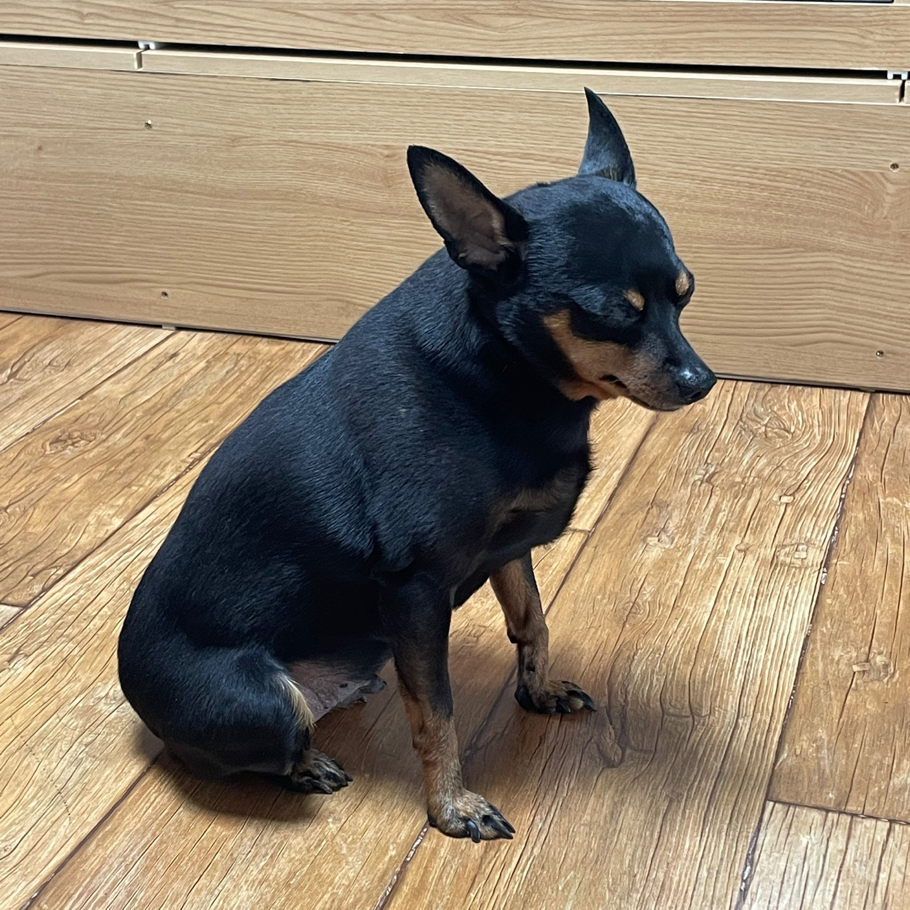

우리집개 콩이의 특성
- 성격: 개같음. 진짜 그냥 멍청이 그 자체임. 하지만 귀여움. 어렸을 때부터 사실 한성깔했었지만 귀여워서 봐줬더니 기어오름..
- MBTI: (있겠냐고)
- 혈액형: AB(추정)
**특이사항**
- 종현이가 고3때 강아지를 키우고싶다고 부모님에게 징징거려, 강사모 카페에서 10만원 분양비와 함께 분양받아옴
- 처음 입양해서 데려올 때, 추울까봐 쿠션에 넣어서 데려옴. 근데 쿠션 안에 쏘옥 들어갈만큼 작아서 콩 이라고 이름지었음(종현이가)
- 입양 후 깨발랄 그자체. 집안이 많이 혼잡해져 부모님이 매우 싫어하셨음..
- 콩이는 그런거 신경쓰지 않는듯함. 꽤 마이웨이 기질이 있으며 산책? 안나가도 그만이라는 마인듯인듯
- 자고있을때 깨우면 성질냄.. 진짜 성깔 왜저러지